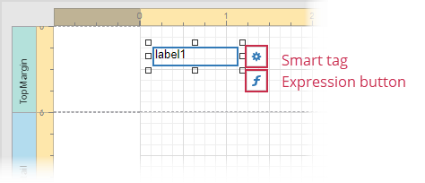

Design Surface
The Design Surface displays a report that is being edited in the Web Report Designer.
Rulers
The horizontal and vertical rulers display tickmarks in your report's specified measurement units. Click an element to evaluate its size and location using the rulers.
The horizontal ruler also allows you to modify the report's side margins (the report's Margins property value) by moving the left and right sliders on the ruler.

You can move a report band's vertical ruler resizing rectangles to change its height.

Band Captions
In the Report Designer, each report band carries a caption, the tab title and color, which depends on the band kind. These captions are not printed in the resultant report document and are only visible at design time.
You can expand or collapse a band's content at design time by clicking the tab on the left side of the band.
To access a band's properties, click the band's caption and switch to the Properties Panel.
Context Menus
Context menus provide quick access to actions for the selected report element. Right-click a report element to invoke the context menu:
Context menus allow you to do the following:
Add new bands, if you selected a report.
Manage cells, rows, and columns in a table.

Change element layout (for example, align elements to each other, snap to grid, change content alignment).

Context menus are also available in Field List and Report Explorer windows.
Smart Tags
When you select a report element (report, band, or report control), a smart tag and expression button are displayed next to the element on the Design Surface:
.
The expression button invokes the Expression Editor.
The smart tag opens a panel with the element's most commonly used properties:

The smart tag contains properties from the element's Task group of the Properties Panel. Note that complex properties (for example, Symbology for a Barcode control) need to be configured in the Properties Panel.
Data Binding Indication
The Report Designer displays a database barrel icon above data-bound report controls.
You can click the Validate Bindings toolbar button to highlight report controls with invalid expression/data bindings. This allows you to determine if the specified expression has an incorrect syntax or uses non-existing data source fields.

In-Place Editors
In-place editors allow you to edit the text-oriented controls' content (Barcode, Character Comb, Check Box, Label, Table Cell) by double-clicking them.
You can switch between a report's Design and Preview mode using the corresponding buttons in the Main Toolbar.